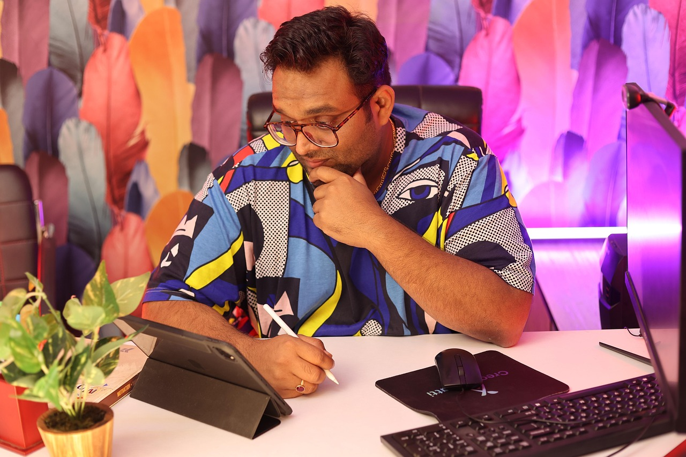

X

¡Rendimiento y autonomía digital comprobados!
Colombia experimenta una expansión significativa en su infraestructura digital, con datos del MinTIC indicando que más del 70% de los hogares ya cuentan con algún tipo de acceso a Internet. Esta penetración masiva en la sociedad de la información, destacada por autores como Castells (2001) , exige una nueva competencia: la capacidad de analizar, valorar e integrar la información disponible.
